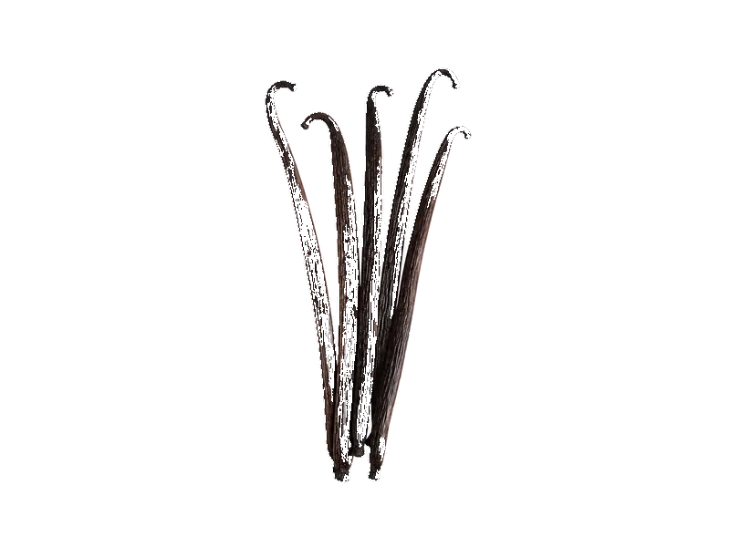

Przyprawy
Przyprawa wanilia laska
Przyprawa wanilia laska: 0.1 g białka, 288 kcal, 12.7 g węglowodanów i 0.1 g tłuszczu na 100 g. Kategoria: Przyprawy.
Kalorie288 kcalna 100 g
Białko / proteiny0.1 g
Węglowodany12.7 g
Tłuszcz0.1 g
Cena (szac.)~50,00 złza 100 g
Ceny zaktualizowano: sierpień 2026 (szacunek — ceny w popularnych supermarketach)
Porcja: łyżeczka (3 g)
| Kalorie | 9 kcal |
|---|---|
| Białko | 0 g |
| Węglowodany | 0.4 g |
| Tłuszcz | 0 g |
| Cena (szac.) | ~1,60 zł |
Szczegółowe składniki odżywcze na 100 g
| Wartość energetyczna (kalorie) | 288 kcal |
|---|---|
| Białko (proteiny) | 0.1 g |
| Węglowodany | 12.7 g |
| Tłuszcz | 0.1 g |
| Tłuszcze nasycone | 0 g |
| Tłuszcze nienasycone | 0.1 g |
| Witaminy i minerały (skrót) | Sód, Żelazo, Mangan |
| Współczynnik kcal / 1 g białka | 2880.0 |
| Cena produktu (szac. za 100 g) | ~50,00 zł |
| Cena za 100 g białka (szac.) | ~53 333,33 zł |
Witaminy i minerały na 100 g
Brak zweryfikowanych danych o składzie mikroskładników dla tego produktu. Zamiast podawać przybliżone wartości posiłkujemy się rzetelnymi danymi (USDA / Open Food Facts) — tutaj ich jeszcze nie ma.